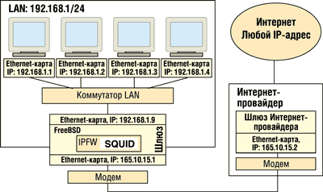
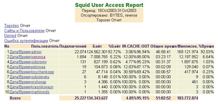
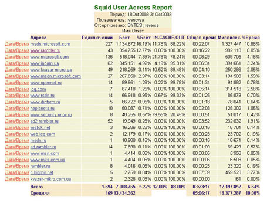

Иван Федорец
astarot_reload@rambler.ru
Все большему числу предприятий сегодня становится необходимо подключить свои компьютерные сети к Интернету. За работу канала доступа обычно отвечает Интернет-провайдер (ISP), но и системному администратору компьютерной сети предприятия, даже небольшого, приходится решать ряд организационных и технологических задач. В данной статье мы не будем рассматривать почтовые службы, IP-телефонию и виртуальные частные сети (VPN), а ограничимся доступом к Web- и ftp-сервисам на базе ОС FreeBSD и прокси-сервера SQUID в корпоративной сети, охватывающей до 100 рабочих мест.
Два метода
Существует два основных метода предоставления пользователям корпоративной сети доступа к Web- и ftp-сервисам: посредством маршрутизации (трансляции) или через прокси-сервер.
В первом случае (рис. 1) доступ предоставляется по IP-адресу компьютера, на котором работает сотрудник. Такую схему можно полностью реализовать на базе программного решения - шлюза ОС FreeBSD и брандмауэра IPFW. Кроме того, существуют комплексные специализированные аппаратно-программные шлюзы. Для терминальных рабочих мест организация доступа по IP-адресам технически невозможна, так как все они используют один IP-адрес терминального сервера.
| Рис. 1. Доступ в Интернет по IP-адресу компьютера пользователя.
|
Для сопряжения рабочих станций пользователей с каналом Интернета используется шлюз в виде х86-сервера с установленными на нем ОС FreeBSD, программой NATD (обеспечивающей трансляцию внутренних IP-адресов в реальный IP-адрес сервера и обратно), IPFW, включенной маршрутизацией и двумя сетевыми интерфейсами: один из них "смотрит" в сторону локальной сети, другой подключен к провайдеру. На каждой клиентской машине в свойствах протокола TCP/IP сетевой карты необходимо прописать IP-адрес шлюза.
Во втором случае происходит авторизация пользователя по имени доступа (login) и паролю, выделенному сотруднику. Этот вариант, в частности, можно реализовать при помощи прокси-сервера SQUID и системы аутентификации ncsa_auth. Рассмотрим типовую схему (рис. 2), где SQUID установлен на шлюзе сети: сервер "смотрит" одним интерфейсом в локальную сеть, а другим подключен к Интернет-каналу. При такой установке SQUID для работы в Интернете (по HTTP, FTP и DNS) на машинах в локальной сети не требуется NATD и маршрутизации, поскольку все запросы к ресурсам Интернета SQUID отправляет "от себя" - с IP-адресом внешнего интерфейса шлюза. Службу DNS на компьютерах клиентов можно отключить, поскольку сам SQUID обращается к DNS.
|  |
| Рис. 2. Доступ в Интернет через прокси-сервер.
|
Как правило, в корпоративной сети используется электронная почта, и для ее работы маршрутизация и NATD на шлюзе все равно понадобятся, но для Web-почты, работающей по протоколу HTTP, достаточно прокси-сервера SQUID.
"Скачанные" из Интернета данные SQUID передает пользователю и сохраняет в своем кэше. При повторном запросе эти данные извлекаются уже из кэша (если, конечно, Web-страница допускает кэширование), что происходит гораздо быстрее и не занимает к тому же канал доступа. Кроме более эффективного использования пропускной способности канала, получается экономия и на объеме трафика (по данным автора, в среднем за месяц она составляет 13%). Данные в кэше могут обновляться в зависимости от настройки самого прокси-сервера. При нажатии кнопки "Обновить" на панели управления браузера прокси-сервер принудительно копирует данные с Web-сервера, даже если они есть у него в кэше и не устарели (а заодно и обновляет их в кэше). Но некоторые страницы на Web-сайтах специально помечаются как некэшируемые, например, для целей повышенной актуальности.
Кроме собственно доступа, системному администратору необходимо еще решить проблемы авторизации доступа, учета трафика и времени работы пользователей в Интернете, обеспечения безопасности локальной сети предприятия. Необходимо также определить правила распределения пропускной способности Интернет-канала между пользователями сети и правила доступа к ресурсам Интернета; возможно, потребуется установить и другие ограничения для пользователей.
Все эти процедуры, в зависимости от принятого типа доступа (по IP-адресу или через прокси-сервер), имеют свои особенности.
Аутентификация
Аутентификация по IP-адресу компьютера не предусматривает защиты доступа в Интернет паролем. Пользователи, зная пароли на доступ к рабочей среде ОС других машин предприятия, могут работать на различных компьютерах. Поэтому, если несколько сотрудников используют один компьютер для работы в Интернете, разделить их трафик при учете невозможно.
Существует вариант подмены IP-адреса; правда, есть и вариант противодействия - статическая таблица ARP (Address Resolution Protocol - протокол преобразования IP-адресов в MAC-адреса/аппаратные адреса сетевых карт) на шлюзе, где прописаны соответствия IP-адрес - MAC-адрес сетевой карты рабочей станции. В общем, IP-аутентификация не обладает достаточной гибкостью и достоверностью и допускает только подсчет суммарного объема трафика.
В случае прокси-сервера пользователям корпоративной сети, получившим разрешение на доступ в Интернет (HTTP, FTP, ICQ), присваивается идентификационная пара: имя (login) и пароль (password). Подобная схема тоже позволяет выходить в Интернет с одного компьютера различным пользователям (главное, чтобы в клиентских программах были прописаны параметры прокси-сервера). Учет трафика будет вестись по каждому пользователю (логину) отдельно. Аутентификацию обеспечивает прокси-сервер SQUID под управлением ОС FreeBSD, а программная подсистема ncsa_auth хранит пароли в зашифрованном формате MD5. SQUID может использовать различные механизмы внешней аутентификации.
Работа в Интернете через прокси-сервер должна поддерживаться клиентским ПО: в его настройках прописывается DNS или IP-адрес прокси-сервера, а также его TCP-порт. Все современные браузеры и клиент ICQ поддерживают работу через прокси-сервер и аутентификацию на нем. Аутентификация может происходить при каждом подключении (запрашиваются логин и пароль) или быть постоянной (не требующей ввода имени и пароля, при этом в настройках клиентской программы прописывается имя пользователя из списка аутентификации прокси-сервера и пароль). Аутентификация происходит однократно и действует до закрытия программы-клиента. По окончании работы в Интернете пользователь просто закрывает браузер и тем самым прерывает разрешенную сессию.
Учет трафика
Учет трафика по IP-адресам рабочих станций ведется средствами IPFW - программного брандмауэра, встроенного в ядро ОС FreeBSD. Для достоверного учета трафика по пользователям при такой схеме доступа сотрудники должны выходить в Интернет только с закрепленных за ними рабочих мест, что, естественно, ограничивает гибкость и мобильность их работы.
Тем не менее такой подход имеет и свое преимущество - более точный учет суммарного объема трафика по IP-протоколу. Эта процедура реализуется с помощью установки двух правил COUNT брандмауэра IPFW:
count ip from any to any in via de0 count ip from any to any out via de0
Первое правило учитывает входящий поток, второе - исходящий. Здесь de0 - внешний сетевой интерфейс шлюза, который имеет реальный IP-адрес в Интернете. В то же время при такой схеме невозможно протоколировать имена ресурсов, посещаемых пользователями, а также имена и размеры скачанных файлов.
При использовании прокси-сервера учет трафика ведется по протоколу HTTP, и объем таких данных меньше, чем величина IP-трафика. Но при аутентификации по пользователям SQUID заносит все данные о запросах (DNS-адреса сайтов, время получения запроса, объем скачанных файлов, источник - кэш SQUID или Интернет) в журнал по каждому пользователю, вне зависимости от IP-адреса клиентской машины.
Безопасность подключения к Интернету
Подключение физического канала Интернет напрямую в корпоративную сеть равносильно вынесению рабочих мест своего предприятия на людную площадь. Как правило, информация, циркулирующая в локальной сети, критически важна для деятельности предприятия, и вредоносное воздействие вирусов (например, почтовых), атака извне или утечка данных изнутри могут полностью нарушить его работу.
Вредоносное воздействие вирусов трудно недооценить, но решение этой проблемы на 90% зависит от осведомленности пользователей - не запустит ли кто вложенный в письмо вирус. Вирусные атаки можно блокировать и отражать антивирусными программами на почтовых серверах (Dr.Web, McAfee, "Антивирус Касперского Business Optimal" и т. д.) и на компьютерах пользователей (Norton Antivirus, соответствующие продукты "Лаборатории Касперского" и т. д.). Главное при этом - своевременное обновление антивирусных баз.
Атаки извне, в зависимости от того, как организовано подключение, блокируются грамотной настройкой шлюза, применением прокси-сервера на шлюзе без NAT и маршрутизации, а также вынесением прокси-сервера, почтового и Web-сервера в "демилитаризованную зону" (DMZ, подсеть корпоративной сети, доступная из Интернета).
Утечки корпоративных данных имеют в основном организационную природу и составляют самую сложную проблему для службы безопасности предприятия. Существуют технические решения, минимизирующие возможность этого: в частности, закрытие всех TCP/UDP-портов на интерфейсе шлюза, "смотрящем" в локальную сеть (остается только порт прокси-сервера). Должна быть отключена маршрутизация и преобразование адресов (NAT) между Интернетом и внутренними ("серыми") IP-адресами сети предприятия.
Перечисленные меры используются, когда прокси-сервер установлен на шлюзе, но более защищенной считается система с прокси-сервером, вынесенным в DMZ.
Наиболее полную защиту обеспечивает физическое разделение локальной корпоративной сети и Интернета. В этом случае на предприятии организуется компьютерная сеть для работы в Интернете, не связанная с локальной сетью каналами передачи информации. Данные, которые необходимо отправить по электронной почте, переносятся на сменных носителях (например, компакт-дисках), которые проверяются службой безопасности и шифруются, например, с помощью PGP - бесплатной программы шифрования почтовых сообщений и файлов.
Распределение пропускной способности канала
Для IP-схемы доступа разделение пропускной способности канала между пользователями можно реализовать средствами Pipes брандмауэра IPFW ОС FreeBSD, а в случае прокси-сервера SQUID - использовать его механизм delay_pools.
Сервер определяет размер файла, запрошенного пользователем, и если этот размер не превышает установленной величины, то файл загружается на максимально возможной скорости. В случае более объемного файла он передается с заданной ограниченной скоростью. Данный механизм применяется не ко всем пользователям, а лишь к перечисленным в списках ACL (Access Control List - именованная группа объектов, к которым могут применяться различные ограничения), что позволяет очень гибко настраивать приоритеты работы различных групп пользователей.
В то же время, если в данный момент работает только один пользователь, к нему все равно будут применяться ограничения по скорости при загрузке больших файлов. IPFW, в отличие от delay_pools у SQUID, позволяет реализовать динамическое деление канала.
Доступ к ресурсам и другие ограничения
Для IP-схемы возможны ограничения только по IP-адресам серверов и по TCP/UDP-портам. Это вызывает неудобства, поскольку сегодня распространен механизм Virtual Hosts Web-сервера Apache на основе протокола HTTP v1.1, когда один Web-сервер с одним IP-адресом обслуживает множество сайтов с разными DNS-именами.
SQUID же, наоборот, предоставляет очень гибкие механизмы администрирования доступа пользователей к ресурсам Интернета с помощью списков ACL. Это может быть, например, доступ в определенное время, день недели, месяц; разрешение/запрет на копирование определенных типов файлов, разрешение/запрет на обращение к ресурсу, в имени которого содержится некоторое ключевое слово.
Настройка шлюза IPFW
В роли шлюза (gateway) используется компьютер с двумя сетевыми интерфейсами (один подключен к каналу Интернета и имеет реальный IP-адрес, а другой "смотрит" в корпоративную сеть и идентифицируется IP-адресом ее подсети), на котором установлена ОС FreeBSD (http://www.freebsd.org). FreeBSD проста в настройке, надежна, распространяется бесплатно и содержит практически все, что может понадобиться для сетевого сервера масштабов предприятия.
Процесс установки ОС FreeBSD, конфигурирование сетевых интерфейсов, запуск и конфигурирование IPFW, NATD, маршрутизации - в общем, все необходимое для настройки шлюза доступа в Интернет (и по IP, и с помощью прокси-сервера SQUID, кроме настройки самого SQUID) подробно описано в книге М. Эбена и Б. Таймэна "FreeBSD. Энциклопедия пользователя" (Киев: Diasoft, 2003).
Для обоих вариантов организации доступа в Интернет необходимо сконфигурировать ПО IPFW. IPFW фильтрует и подсчитывает IP-пакеты на всех сетевых интерфейсах. Программа также обрабатывает пакеты и на более высоких уровнях: UDP, TCP и ICMP. Кроме того, IPFW участвует в работе NATD. Автор рекомендует при настройке правил ipfw воспользоваться утилитой trafshow для контроля обращений в сеть и из сети по всем интерфейсам с указанием IP-адресов внешних машин, протоколов и портов в реальном времени. Команда
trafshow -i fxp0 -n
задает отображение пакетов на fxp0-интерфейсе с номерами портов, а команда
ipfw -a list
отображает правила ipfw, число пакетов и объем трафика (в байтах), прошедших с момента включения сервера или последнего обнуления счетчиков правил.
Внедрение и работа с SQUID
Кэширующий прокси-сервер SQUID (http://www.squid-cache.org) на платформе Unix - это распространяемое бесплатно ПО с открытым кодом. Он легко конфигурируется, хорошо документирован, широко распространен и просто интегрируется с ОС FreeBSD. SQUID позволяет организовать различные типы аутентификации при доступе к Интернету, разграничивает доступ по любому параметру (имени домена, ключевому слову в адресе, протоколу и т. д.) на основе списков ACL.
При использовании SQUID на шлюзе необходимо закрыть для локальных машин возможность обращаться к внешним адресам (и наоборот) и разрешить доступ из локальной сети только к порту прокси-сервера на его локальном интерфейсе. NAT и маршрутизацию на шлюзе, если они не нужны для SMTP или для других служб, также следует отключить.
|
Установка SQUID и системы авторизации Установка проводится из портов ОС FreeBSD (в версии 4.9, текущая версия 4.10) /usr/ports/www/squid (2.5 версия STABLE3) или /usr/ports/www/squid24 (STABLE7). Нужные опции необходимо раскомментировать в Makefile. Рекомендуемые опции: CONFIGURE_ARGS+= -enable-delay-pools(для включения механизма распределения пропускной способности); CONFIGURE_ARGS+= -enable-err-language=Russian-1251(для диагностики на русском языке) После установки SQUID необходимо установить саму систему авторизации. Ее исходные тексты содержатся в файлах SQUID: /usr/ports/www/squid24/work/squid-2.4.STABLE7/auth_modules/NCSA Рабочий пример текста squid.conf icp_port 0 client_netmask 255.255.255.0 authenticate_program /usr/local/squid/bin/ncsa_auth /usr/local/etc/passwd authenticate_children 20 reference_age 2 weeks acl all src 0.0.0.0/0.0.0.0 acl manager proto cache_object acl localhost src 127.0.0.1/255.255.255.255 acl SSL_ports port 443 563 acl Safe_ports port 80 # http acl Safe_ports port 21 # ftp acl Safe_ports port 443 563 # https, snews acl Safe_ports port 70 # gopher acl Safe_ports port 210 # wais acl Safe_ports port 1025-65535 # unregistered ports acl Safe_ports port 280 # http-mgmt acl Safe_ports port 488 # gss-http acl Safe_ports port 591 # filemaker acl Safe_ports port 777 # multiling http acl CONNECT method CONNECT acl Inet_users proxy_auth "/usr/local/etc/squid_users" delay_pools 1 delay_class 1 2 delay_parameters 1 7500/7500 1875/1875 delay_access 1 allow Inet_users delay_access 1 deny all http_access allow manager localhost http_access deny manager http_access deny !Safe_ports http_access deny CONNECT !SSL_ports http_access allow Inet_users http_access deny all
|
После установки, конфигурирования, запуска SQUID и его системы авторизации администратору остается только добавление и удаление пользователей. Данные о пользователе достаточно создать лишь в SQUID, так как он не попадает в среду ОС прокси-сервера, и соответственно не надо создавать идентификационные данные пользователя ОС. После изменений в squid.conf или добавления/удаления пользователей SQUID должен перечитать свою конфигурацию без закрытия существующих пользовательских сессий командой
squid -k reсonfigure.
Создавая пользователя SQUID при помощи ncsa_auth, необходимо прописать login и пароль пользователя в двух файлах конфигурации; в нашем примере это будет выглядеть так:
/usr/local/etc/squid_users /usr/local/etc/passwd
В первый файл просто добавляется имя (login) пользователя с новой строки с помощью текстового редактора. Во втором файле хранятся пароли пользователей (в MD5), и добавлять в этот файл учетную запись можно только с помощью утилиты htpasswd, которая поставляется с Web-сервером Apache.
Необходимо следить за содержанием кэша SQUID и периодически его очищать во избежание переполнения файловой системы - командой squid -Z.
В настройках клиентов в свойствах браузеров и клиентов ICQ необходимо указать IP-адрес прокси-сервера и порт. В нашем примере это IP:192.168.1.8 и порт 3128 (этот порт используется по умолчанию). Если программа ICQ настроена для работы через прокси-сервер, то она использует 443-й, а не 5190-й TCP-порт ICQ-серверов, что также надо учитывать при настройке межсетевых экранов. При использовании SQUID необходимо закрыть для локальных машин возможность обращаться к 80-му TCP-порту Интернет-серверов. Можно вообще разрешить доступ только к порту прокси-сервера, а ко всем остальным, за исключением почтовых, его закрыть, дабы "продвинутые" пользователи не ходили в Интернет в обход SQUID.
С тонкостями настройки SQUID можно познакомиться на сайте http://www.bog.pp.ru/work/squid.html.
Анализ трафика
Для этой цели используется бесплатная программа-анализатор с открытым кодом SARG (http://sarg.sourceforge.net). Результат ее работы - HTML-страницы, которые отображают всевозможные статистические срезы данных о работе пользователей в Интернете. Анализируется весь период ведения журнала, поэтому удобнее делать необходимые срезы в конце месяца, а затем очищать журнал SQUID командой access.log.
Наиболее часто востребованы два типа срезов. Во-первых, распределение объемов информации, загруженной из Интернета, по пользователям, обычно отсортированное по убыванию объема (рис. 3). При этом выдается также количественная информация об эффективности кэширования. Данный срез позволяет проанализировать объем работы в Интернете в целом и проранжировать пользователей по активности их работы в Интернете.
|  |
| Рис. 3. Пример анализа трафика Интернета у пользователей корпоративной сети (данные отсортированы по объему трафика, полученному пользователем за месяц).
|
Второй популярный срез - отображение загруженной конкретным пользователем информации по сайтам (рис. 4), также отсортированное по убыванию объемов данных. Данный срез позволяет провести "разбор полетов" пользователя в Интернете и выяснить, соответствуют ли наиболее часто запрашиваемые сайты служебным обязанностям сотрудника.
|  |
| Рис. 4. Пример анализа трафика конкретного пользователя сети (данные отсортированы по объему трафика с конкретных сайтов).
|
Выводы
Мы рассмотрели два варианта организации постоянного подключения корпоративной сети к Интернету.
Для варианта "по IP-адресам компьютеров пользователей с помощью правил IPFW" характерны следующие недостатки. Во-первых, невозможно проверить целесообразность работы пользователя в Интернете, поскольку IPFW подсчитывает только суммарный трафик, по каждому правилу, прописанному для конкретной машины, и не ведет учета посещаемых сайтов. Во-вторых, невозможно провести авторизацию пользователя, работающего в данный момент в Интернете. Это особенно важно, если машину "делят" между собой несколько пользователей. И наконец, существует возможность подмены пользователем IP-адреса.
Кроме того, в случае использования терминального сервера невозможно учитывать трафик различных пользователей, так как все они работают с одного IP-адреса терминального сервера.
Перечисленные недостатки просто отражают ограничения учета и администрирования трафика по IP-адресам и системы учета IPFW. IPFW и не предназначен непосредственно для замеров трафика пользовательских машин, это средство для учета канального трафика.
Полное и законченное решение проблемы предоставляет система, использующая шлюз с ОС FreeBSD, настроенный брандмауэр IPFW и установленный на нем прокси-сервер SQUID с включенной аутентификацией ncsa_auth. Использование кэширующего прокси-сервера в корпоративной сети позволяет сэкономить до 10% на оплате объема месячного трафика и многократно ускорить загрузку повторно посещаемых ресурсов.
Все ПО, применяемое в данном решении, - бесплатное. Расходы на его поддержку минимальны, а как показывает практика, система FreeBSD+SQUID достаточно надежна.
Система SQUID благодаря гибкости настройки и наличию интерфейсов для подключения внешних модулей хорошо масштабируется. Погрешность учета трафика по протоколу HTTP в сравнении с IP, присущая SQUID, не принципиальна; гораздо важнее, что при этом можно организовать достоверный количественный и качественный мониторинг работы пользователей в Интернете по протоколам HTTP, HTTPS и FTP и разграничить права и приоритеты доступа.
Прокси-сервер способен функционировать на достаточно маломощной машине, например, с процессором Celeron частотой 1 ГГц, 128 Мбайт памяти и жестким диском 20 Гбайт (такая конфигурация в данный момент работает на нашем предприятии, обслуживая 30 пользователей), а роль шлюза при доступе по IP (FreeBSD, IPFW, NATD) может выполнять компьютер на базе Pentium 166 МГц со 128 Мбайт памяти.
Дополнительные источники информации1. Майкл Эбен, Брайан Таймэн. FreeBSD. Энциклопедия пользователя. Киев: Diasoft, 2003 (http://www.diasoft.kiev.ua). В этой книге прекрасно раскрыты вопросы установки ОС FreeBSD, настройки сетевых интерфейсов, сборки ядра, системного и сетевого администрирования. По мнению автора, это лучшая книга на русском языке по администрированию ОС FreeBSD. Она хороша и для начинающих, и для уже работающих администраторов. У авторов книги получилось удивительно сбалансированное сочетание - это и полноценный учебник "с нуля", и справочник администратора. В книге также описана настройка программ, реализующих прикладной аспект сервера FreeBSD: организация шлюза (NAT, IPFW), Apache, FTP, BIND, NFS, SAMBA, DHCP. 2. Терри Оглтри. Firewalls. Практическое применение межсетевых экранов. М.: ДМК Пресс, 2003 (http://www.dmk.ru). Очень удачная книга на тему организации и защиты подключения компьютерной сети предприятия, с базового до среднего уровня. 3. Ресурсы Интернета: http://freebsd.org - официальный сайт ОС FreeBSD; http://opennet.ru - настройка FreeBSD; http://www.squid-cache.org - официальный сайт SQUID; http://squid.opennet.ru - общая настройка SQUID; http://www.bog.pp.ru/work/squid.html - профессиональное конфигурирование SQUID; http://squid-docs.sourceforge.net/latest/html/c16.html - документация по SQUID; http://web.onda.com.br/orso/index.html - сайт SARG. |